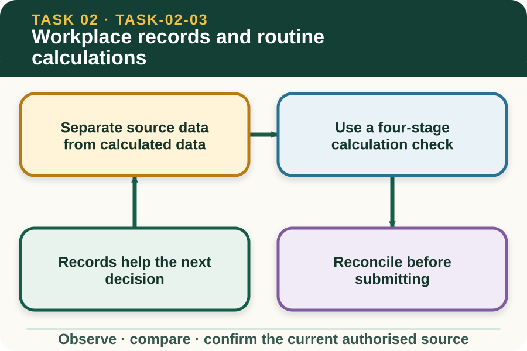

Learning purpose
Complete clear records and check common totals, quantities and time entries.
Task 2 · Lesson 3 of 4
Complete clear records and check common totals, quantities and time entries.
Learning purpose
Complete clear records and check common totals, quantities and time entries.
Success criteria
Learning boundary
Supplementary learning and formative practice only. Current RTO assessment, local procedures and authorised supervision control real work.

A workplace record preserves information so another authorised person can understand what occurred and act on it. Accuracy, legibility, relevant terminology and timely completion matter whether the record is paper or electronic.
A record should match the current form and source. This lesson practises data thinking with fictional fields; it does not reproduce the controlled Task 2 work report, schedule or RTO submission process.
Source data is directly observed or taken from an authorised document, such as a fictional count of 12 intact items. Calculated data is produced from source values, such as a total across four groups.
Keeping the difference visible makes checking easier. Record units beside values and preserve the original figures so another person can repeat the calculation rather than trusting an unexplained total.
First identify what the answer must represent. Then select the operation, calculate with units and test whether the result is reasonable compared with the source information.
A calculator reduces arithmetic effort but does not choose the correct operation or unit. An answer can be numerically exact and still be wrong if minutes were treated as decimal hours or different item groups were combined.
Reconciliation compares related parts of a record. The sum of category counts should match the total, a finish time should follow the start time, and a quantity recorded as completed should match the relevant work note.
When values do not agree, do not force the total to balance. Recheck the source, calculation, transcription and unit, then correct the error according to the current record procedure or refer it if the source cannot be confirmed.
Fictional worked example
Observed evidence: A fictional count sheet lists four bins with 18, 17, 20 and 19 sealed items, while the total box says 75. Decision and reason: The source entries add to 74, so either a bin count or the total is wrong. Safe action: The learner repeats the arithmetic and checks the original bin observations rather than changing a figure to make it balance. Result: The second bin is confirmed as 18, giving a supported total of 75. Next check or record: The correction is made through the authorised process with the source check visible.
Comment fields should explain exceptions that affect the record. 'Two packages held for supervisor review because labels were unreadable' is more useful than 'stock bad' because it records the observation and status without guessing a cause.
Do not enter private worker details, blame or unsupported conclusions. If an error or abnormality affects another process, use the workplace reporting channel as well as the record field.
Errors should be identified and rectified according to workplace procedure. A transparent correction shows that the record was checked; secretly rewriting data can make the source trail less reliable.
The authorised form decides how a correction is entered, signed or stored. The general principle is to preserve truth, units and enough context for another person to understand the final value.
Formative practice
Each option explains the consequence. These answers save only on this device.
Written application
Apply and keep a learning record
Check a teacher-provided fictional record for one arithmetic error, one unit error and one unclear comment. Explain each correction without copying the controlled assessment template.
Learning record: A supplementary-learning annotated record audit with recalculation and reasons for each correction.
Lesson responses and the activity are formative learning only. Formal sufficiency and competence remain with the current RTO process.
Source basis: AHCWRK213 Release 1 requirements for accurate records, routine calculations, error correction and reporting, supported by AHCWRK212 quality-of-own-work expectations. Current workplace forms and correction processes remain controlling.